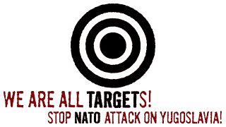
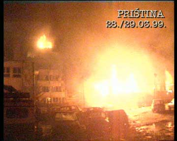
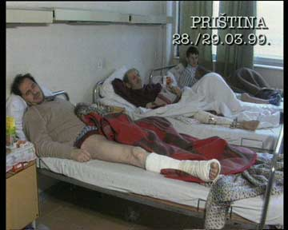
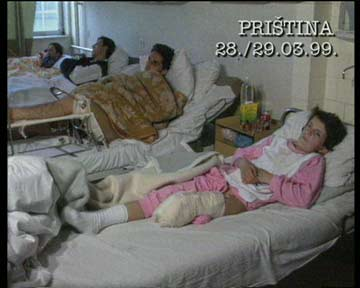

 BEOGRAD HACKERS RULE!! We Have Your Site!!
THE YUGOSLAV CITIZENS' MESSAGE TO NATO WORLD CRIMINALS
Yugoslavia is informing its listeners and Internet users throughout the world that the aggression against the Federal Republic of Yugoslavia has dramatic proportions. Murderers and criminals, organized under the name of NATO, are shooting at civilian targets in our country. The reason for doing so is obviously to inflict material damage on the economy, roads and all other assets. Their desire is to destabilize our country and undermine the unity of our people, army and state leadership, and to try to conquer us.
Such an aggression and bestiality have not been seen since the time of concentration camps in World War II. The criminals' missiles are falling on schools full of children, hospitals with people being treated in them, roads are being destroyed so that many places are being left without food. They are bringing down transmission lines, so as to leave the people without electricity, and using chemical weapons in order to cause as great a pain and suffering of the population as possible. They are cutting the major waterworks and targeting factories using chemical raw materials.
It is the Serbs, Montenegrins, Albanians, Turks, Muslims, Gorancies, Romanies and all those living in our country that are suffering the consequences of the acts by NATO criminals.
Bill Clinton and his collaborator - Javier Solana, are justifying all this with the need to protect democracy. The message of all the citizens of Yugoslavia, the Serbs, Albanians and Montenegrins alike, to them is to stop protecting our democracy. Our state is eight centuries older than the United States. All Yugoslav citizens say to them that they will remain steadfast in support of their army, their state and their president, Slobodan Milosevic. And a message to them from all the citizens of Yugoslavia is that we never lost wars and that our retaliation against those who had attacked us, has always been painful.



More Links
Demonstrations in Washington, April 4th
Please come to Serbian demonstrations in front of the White House on Sunday, April 4, starting at 2 p.m. People will come in an organized fashion by buses from cities from the entire Eastern Coast of the U.S. - from New York (8 buses booked already); Pittsburgh; Cleveland; and many other cities.
Pozivam vas da u sto vecem broju dodjemo u Vasington na velike srpske demonstracije ispred Bele Kuce u Nedelju, 4. aprila, sa pocetkom u 14.00h. Doci ce organizovano ljudi autobusima iz gradova sirom istocne Amerike - iz Njujorka (za sada bukirano 8 autobusa); Pitsburga; Klivlenda; i mnogo drugih gradova sa cele istocne obale Amerike.
Beograd, 24.marta 1999 Generalstab Vojske Jugoslavije obavestava jugoslovensku i medjunarodnu javnost da je veceras u 20.00 casova NATO pakt izvrsio agresiju na Saveznu Republiku Jugoslaviju. Vojne snage Severnoatlanske alijanse, po diktatu i interesu svetskog policajca, Sjedinjenih Americkih Drzava, a za racun siptarskih separatista i terorista, grubo su narusile teritoriju suverene Jugoslavije i brutalno ugrozile zivote njenih gradjana, saopstila je informativna sluzba Generalstaba VJ. Borbeni efektivi sistema protivvazdusne odbrane koji su pravovremeno otkrili agresorske projektile i efikasno dejstvovali nisu osteceni i ostaju u borbenom rasporedu i spremnosti za dalja dejstva. U prvom naletu svetskih agresora gadjano je preko dvadeset objekata, a dejstva jos traju. Vojska Jugoslavije preduzima sve mere odbrane i zastite. Operativna spremnost i borbena gotovost su na najvisem nivou, a raspolozenje i motivisanost vojnika i oficira je besprimerno visoka. U jedinice Vojske Jugoslavije masovno se javljaju dobrovoljci za odbranu otadzbine. Prve eksplozije do kojih je doslo posle napada NATO pakta oznacile su kraj medjunarodnog prava, suspendovale Povelju Ujedinjenih nacija i otvorile novu stranicu svetske istorije, zakljucuje se u saopstenju.